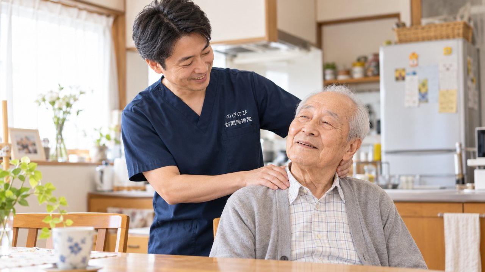
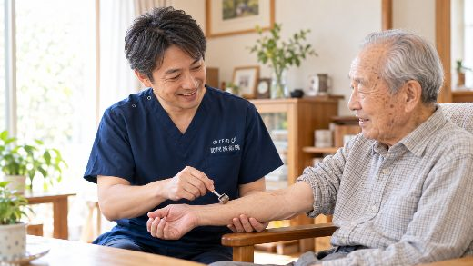
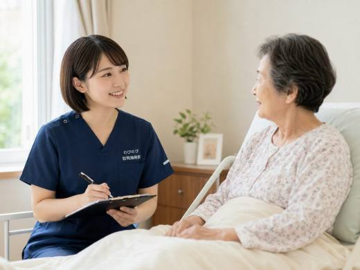

頸肩腕症候群は、はり・きゅうの療養費で認められている6つの病名の一つで、医師が治療の必要を認めた慢性の症状であれば、医療保険を使ってご自宅で施術を受けられます。自己負担は1割負担で約395円（施術1種類の総額3,950円）ほど。治療院まで通うのがつらくなった方のもとへ、施術者がうかがいます。
要点から。頸肩腕症候群のような慢性的な症状について医師が必要と認め、通院がむずかしければ対象になる場合があります。
デスクワークや家事のあと、腕のしびれが抜けないのはなぜ？
首から肩、腕、指先にかけてのしびれやだるさ、ずっしりとした痛みが、なかなか抜けずに続くことがあります。こうした不調がひとまとまりに現れる状態を、頸肩腕症候群（けいけんわんしょうこうぐん）と呼びます。 背景として考えられているのは、パソコン作業や家事、スマートフォンをのぞき込む姿勢など、同じ格好が長く続く生活習慣や、年齢を重ねるにつれて起こる首の骨や筋肉の変化です。
髪を洗おうと腕を上げるとつらい、高い棚の物に手が届きにくい、包丁を握ったりぞうきんをしぼったりすると手がだるくなる、夜になると腕がしびれて眠りが浅くなる。こんなふうに、暮らしの細かな場面での不便として表れるのが、この症状のわかりにくいところです。肩こりの延長だと思って我慢を重ねてしまう方も多いのですが、腕のしびれやだるさを抱えたままの毎日は、思いのほか体力を削っていきます。
頸肩腕症候群は、はり・きゅうの保険対象6病名の一つ
はり・きゅうを医療保険（療養費）で受けられる症状は、慢性の痛みを中心に6つの病名が定められています。神経痛、リウマチ、腰痛症、五十肩、頸肩腕症候群、そして頸椎捻挫後遺症です。 頸肩腕症候群は、まさにこの6つのうちの一つ。
医師が「はり・きゅうによる治療が必要」と判断した慢性の頸肩腕症候群であれば、医療保険を使って施術を受けられます。のびのびでは、この症状にはり・きゅうを中心とした施術で向き合います。
つり革につかまる動作すらつらいとき、通わずに受けるという選択
首や肩、腕に痛みを抱えていると、電車やバスに乗って治療院へ向かうこと自体が、ひと仕事になってしまいます。つり革につかまって体を支える、揺れに耐える、長い距離を歩く。そのどれもが、かえって腕や肩にこたえてしまうことがあります。 訪問鍼灸マッサージは、施術者がご自宅へうかがう形です。
着替えて出かける準備も、道中の負担もいりません。住み慣れた部屋で、いつもと同じ姿勢のまま受けていただけるので、症状を抱えた方ほど続けやすいのが持ち味です。訪問のたびに首や腕の状態を確かめ、その時々に合ったペースでケアを積み重ねていけます。
首だけでなく、姿勢のクセまでみる施術
のびのびでは、はり・きゅうを軸に、首すじや肩、腕まわりに広がった緊張をゆるめていくことをめざします。首の付け根、肩甲骨のまわり、腕の付け根といった、こりのたまりやすい場所を一つずつ手で確かめながら、鍼やお灸をあてていきます。痛む場所だけを追うのではなく、猫背ぎみの背中や、いつも同じ側にばかり負担をかけている動かし方といった、症状の土台になっているクセまで含めて全身を見渡すのが、のびのびの流儀です。
鍼やお灸に加えて、肩や腕をゆっくり動かすお手伝いや、こわばりをほぐす軽いケアを組み合わせることもあります。これらについて別途の料金はいただきません。その日の体調をうかがいながら中身を微調整し、少しでも楽な時間を過ごしていただけるよう手を尽くします。
この症状が出たら、鍼灸より先に医療機関へ
症状の出方によっては、施術より先に医療機関を受診していただくほうがよい場合があります。急に手や腕に力が入らなくなった、しびれが急に強まった、しびれる範囲が急に広がった、ろれつが回りにくい、片側の手足が同時に動かしにくい。こうしたときは、迷わずすぐに医療機関を受診してください。
訪問鍼灸マッサージが受け持つのは、あくまで医師が治療の必要を認めた慢性の症状へのケアです。急な変化や強い症状が現れたときは、まず診察を受けることを最優先にしてください。
医療保険で受けるには｜同意書と対象になる方
医療保険を使って施術を受けるには、医師が治療の必要を認めた慢性の痛みやしびれであることと、かかりつけ医の同意書がそろっている必要があります。 対象となるのは、慢性的な首・肩・腕のしびれや痛みがあり、自力で治療院へ通うのがむずかしい方です。同意書の準備や医師へのお願いは、のびのびが段取りをお手伝いしますので、こうした手続きが初めての方も気負わずにご相談ください。同意書まわりでつまずいたらこちらのページをどうぞ。
施術でめざせることと、続けていく形
はり・きゅうによる施術では、首や肩まわりに張りつめた緊張がゆるみ、痛みやしびれが和らいで腕を動かしやすくなっていくことをめざします。 首や肩まわりの張りがゆるむと、腕を上げるときに引っかかっていた動きに余裕が出ることがあります。ただし間隔があくと張りは戻りやすく、感じ方にも個人差があります。症状の重さや回復の道のりには一人ひとり差がありますから、そのつど体の状態を確かめ、あせらないペースで続けていきます。
自己負担は約395円｜料金とうかがえる地域
のびのびの料金は、公的な医療保険にもとづいた正規のものです。施術1種類あたりの総額は3,950円で、自己負担は1割負担の方なら約395円がめやすになります。月ごとに、内容がわかる明細をお渡しします。
たとえば週2回であれば、ひと月およそ3,160円（1割の方）が自己負担の目安です。 うかがえるのは、豊中市・吹田市・茨木市・高槻市・箕面市・摂津市・池田市、尼崎市・伊丹市、そして大阪市の淀川区・東淀川区・都島区・北区・旭区の13地域です。このエリアで首・肩・腕のしびれや痛みにお困りの方は、気軽にお声がけください。
こんな方に選ばれています
頸肩腕症候群を抱える方のなかには、首や肩のこりに加えて、腕を上げる、物を持つといった何気ない動作までつらくなっている方が多くおられます。家事や身のまわりのことに支障が出てくると、気持ちまで沈みがちになるものです。
デスクワークや家事で長年おなじ姿勢を続けてきた方、以前は治療院に通っていたけれど足腰が弱って通うのが難しくなった方などから、訪問という形は続けやすいと受け止めていただいています。ご自宅でくつろいだ姿勢のまま受けられるので、通院の予定に追い立てられることもありません。
どのくらいの間隔でうかがう？頻度の考え方
慢性的な頸肩腕症候群のケアは、一度で区切りをつけるより、体の状態を見ながら定期的に重ねていくほうが、良い状態を保ちやすくなります。はじめのうちは間隔を詰めてうかがい、様子を見ながら少しずつ頻度をゆるめていくことが多いです。
ちょうどよい間隔は、症状の重さや暮らしの事情によって変わってきます。ご本人の負担にならないペースを何より大切にしながら、医師やご家族とも相談のうえで、無理なく続けられる形を一緒に探していきます。
よくある質問
首・肩・腕のしびれや痛みが続く方でも受けられますか？
頸肩腕症候群のような慢性的な症状について医師が必要と認め、通院がむずかしければ対象になる場合があります。
パソコンや家事で悪化します
同じ姿勢や使いすぎが関わることがあります。負担の少ない工夫もお伝えします。
頸肩腕症候群ではどこを施術しますか？
首・肩・腕のこわばった筋肉を、はりや手技でやさしく和らげます。
腕のしびれが強いのですが
強いしびれや力の入りにくさは、まず医師に診てもらいましょう。

首・肩のこりや腕のしびれがつらい高齢の方へ｜頸肩腕症候群と訪問鍼灸マッサージ
続きを読む
胸郭出口症候群・腕や手のしびれ｜つり革につかまるとつらい方への在宅の鍼灸ケア
続きを読む
大阪市北区で首肩のこり・腕のしびれにお悩みの方へ｜ご自宅での訪問鍼灸
続きを読む
鍼灸で医療保険が使える対象症状｜代表的な6つと料金・自己負担のめやす
続きを読む
手のしびれ・手根管症候群｜親指から中指のしびれに訪問鍼灸ができること
続きを読む